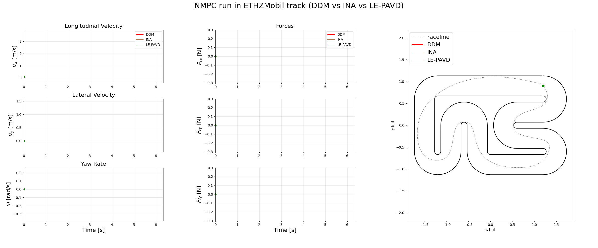
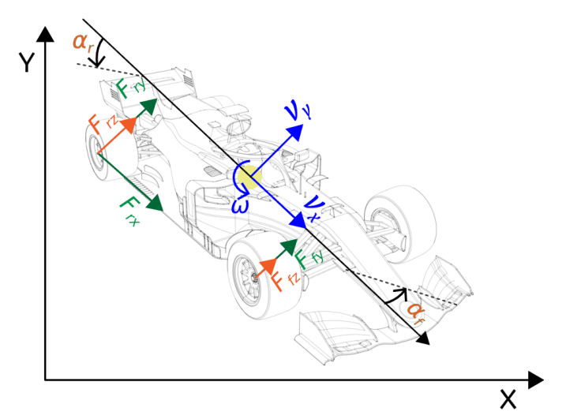
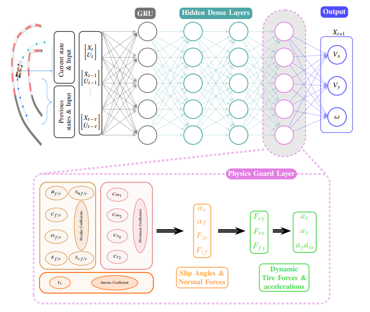
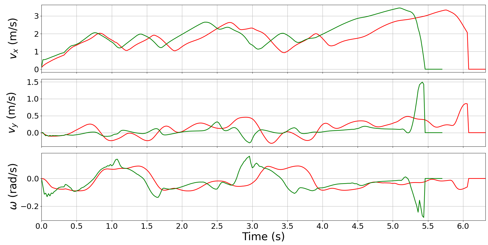
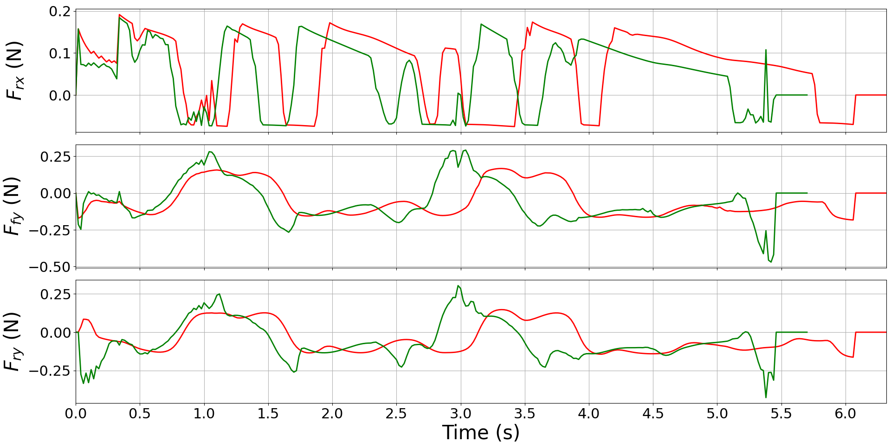

Closed-loop NMPC runs on the ETHZMobil and ETHZ maps.
Pure Pursuit is used for warm-up, then NMPC is applied once sufficient state/history is available.
All three variants (DDM, INA, and LE-PAVD) use the same NMPC formulation, controller parameters, constraints,
and reference trajectory; only the internal dynamics model differs.
All models are trained on ETHZ track data and evaluated on ETHZ and the unseen ETHZMobil track to assess generalization.

Green is LE-PAVD, Brown in INA, Red is DDM.
LE-PAVD combines a recurrent neural dynamics predictor with a physics guard layer that enforces slip-angle consistency, load-dependent tire forces, and physically admissible accelerations within the NMPC loop.

Vehicle dynamics convention. Definition of longitudinal/lateral velocities, yaw rate, slip angles, and tire-force directions used by the physics guard layer in closed-loop NMPC.

Model architecture. A GRU-based predictor estimates latent dynamics, while a physics guard layer computes tire forces and accelerations using physically consistent constraints.


Green is LE-PAVD, Brown in INA, Red is DDM.
| Model | Track | Lap Time (s) | Avg. vx (m/s) | Avg. vy (m/s) | Avg. ω (rad/s) | Violations |
|---|---|---|---|---|---|---|
| DDM | ETHZMobil | 6.3 | 1.78 | 0.12 | -0.02 | None |
| INA | ETHZMobil | 6.6 | 1.81 | 0.13 | 0.02 | None |
| LE-PAVD | ETHZMobil | 5.7 ↓ | 1.91 ↑ | 0.06 | -0.03 | None |
| DDM | ETHZ | 8.6 | 1.88 | -0.06 | 0.01 | None |
| INA | ETHZ | 8.8 | 1.96 | -0.06 | 0.02 | None |
| LE-PAVD | ETHZ | 7.1 ↓ | 2.11 ↑ | -0.05 | 0.01 | None |
Last updated: